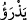
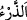
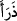
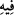
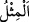

(kendilerine) eşler yaratmıştır. Bu sûretle çoğalmanızı sağlamıştır. O’nun benzeri
hiçbir şey yoktur. O işitendir, görendir.
“O, gökleri ve yeri” ulvî ve süflî ufukları, ruh ve nefisleri “yoktan yaratandır.” Ulvî
ve süflî ufukların yaratılması zâhir mânâdır. Ruhların ve nefislerin yaratılması da
işâreten buna dâhildir. “Size kendinizden eşler”, hanımlar, çiftler “hayvanlardan da
(kendilerine)” kendi cinslerinden “eşler yaratmıştır.” Yahut hayvanları da sınıf sınıf
olarak yaratmış, yani pek çok hayvan çeşidi var etmiştir. Allah bütün bunları size bir
lutuf ve ikram olarak yapmıştır. Nitekim bunlarla hayata destek bulursunuz. “Zevc”
kelimesi sınıf mânâsına da gelmektedir. “Ve sizler üç sınıf (ezvâcen selâseten)
olduğunuz zaman” (el-Vâkıa, 56/7) âyetinde bu mânâdadır. Yahut Allah Teâlâ sizleri
ve hayvanları erkekler ve dişiler olarak yaratmıştır. Zîrâ her iki çiftin toplamına da
“ezvâc” denir. Ki bu “ferd”in zıddıdır.
“Bu sûretle” Allah sizlerin ve hayvanların “çoğalmanızı sağlamıştır.” Buradaki
kelimesi
kökünden gelmekte olup “çoğaltmak, üretip yaymak” demektir. Kâmus’ta
belirtildiğine göre / “bir şeyi üretip çoğaltmak” mânâsındadır. İnsan ve cinlerin nesli
için kullanılan “zürriyet” kelimesi de bu kökten olup aynı mânâda kullanılmaktadır.
Allah Teâlâ, insanlar ve hayvanlar için karşı cinsler yaratıp aralarında doğum sistemi
koymuştur. Burada “ ” yerine “ ” kelimesi tercih edilmiştir. Hâlbuki bu düzen, üretme
ve yaymanın bir zarfı değildir. Bilakis bunlara sebeptir. Çünkü bu tedbir ve düzen,
üretme ve yaymanın kaynağı durumundadır. Burada iki tane tağlib kuralı uygulanmıştır.
Bunlardan biri muhatabın gâibe tağlib edilmesidir. Çünkü Allah Teâlâ “sizi çoğaltıyor”
buyurmuş da “sizi ve onları çoğaltıyor” buyurmamıştır. Burada gâib kalıbıyla zikredilen
“el-en’âm” lafzıdır. İkinci tağlib kuralı ise yine aynı ifâdede akıl sahiplerinin
diğerlerine tağlib edilmesidir. Zîrâ “yezraukum”deki “ ” hitabı akıllılara mahsustur.
“O’nun benzeri hiçbir şey yoktur”: Burada “
/misl” kelimesi zâttan kinâyedir. Bu
durum Arapların: “Senin gibisi böyle yapmaz” sözü gibidir ki, bununla o zâttan bu işi
nefyetmekte mübâlağa kasdedilmektedir. Çünkü böyle bir şeyin ona münâsip ve
mümâsil olan birinden bile meydana gelmesi nefyedilince, o zâttan meydana gelmesi
hayda hayda nefyedilmiş olur. Bu durum, o zâtın hakîkaten bir benzerinin olmasını
gerektirmez. Bilakis bir benzer takdir edilerek durum arzedilir. Sonra bu kâide ve uslup
hiç benzeri olmayanda da câri olmuştur.
“Şey” mevcut ve var olandır. Şey kelimesi âraz yahut cevher bütün varlıkların
tamamının ismidir. Sibeveyh’e göre “şey mevcut olsun veya olmasın bilinip
kendisinden haber verilendir. Mânâ şöyledir: İnsan ve hayvanların üretilip
yayılmasından ibaret olan bu düzen içinde aynı cümleden olarak hiçbir konuda Allah’ın
zâtı gibi hiçbir şey yoktur. Çünkü Allah Teâlâ’nın zâtı hiçbir şekilde ve bütün şekillerde
hiçbir kimsenin zâtına benzemez. Zîrâ bütün eşya her şey cisim ve ârazdırlar. Rabbimiz
bütün bunlardan çok yüce ve münezzehtir. Allah’ın ismi gibi başka hiçbir isim yoktur.
“Hiç O’nun adıyla anılan birini biliyor musun?” (Meryem 19/65) Onun sıfatı gibi